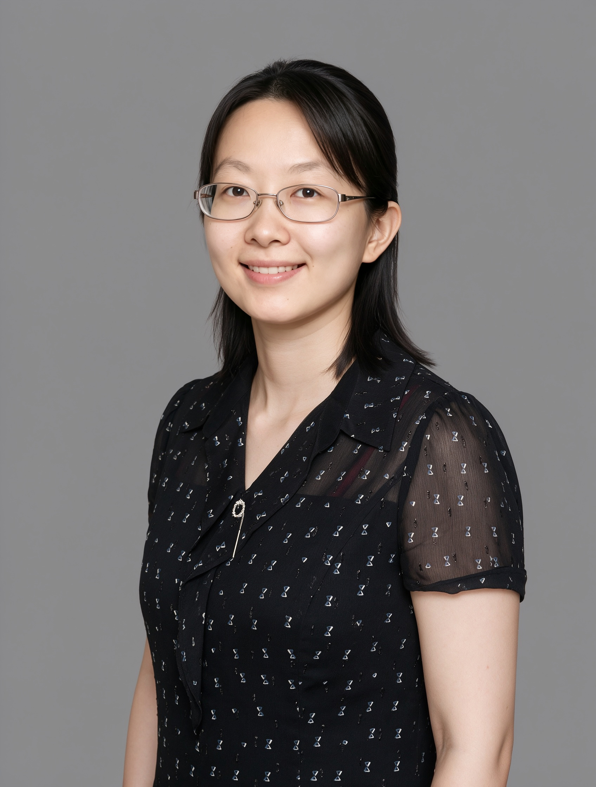

Principal Investigator
zhengxh@im.ac.cn
Xuhui received her B.S. in Biological Science at Peking University, Beijing, China, working on Mycobacterium with Dr. Babak Javid. She did her PhD in Microbiology with Dr. Victor Torres at New York University, New York, USA, on the Gram-positive bacteria Staphyloccocus aureus and its pathogenesis. She then start to work on the Gram-negative bacteria Pseudomonas aeruginosa and its ability to form biofilms with Dr. Matthew Parsek at the University of Washington, Seattle, USA. On January 2027, Xuhui will be joining the Institute of Microbiology, Chinese Academy of Science, as a principle investigator. Outside of the lab, Xuhui enjoys hiking and crafting.